Ultramarine owns the page.
Seed hue 264° in OKLCH. Lapis is the ground, not an accent: whole sections sit on it. Vellum and parchment are the paper. Rosehip and pollen come straight from the Redouté rose and the Haeckel plates, used in small doses.
Lapis — the owneroklch(0.47 0.25 264) · #073fe3
Deepoklch(0.34 0.18 265)
#082593
Inkoklch(0.24 0.12 266)
#061457
Nightoklch(0.17 0.07 268)
#040b2d
Periwinkleoklch(0.78 0.10 264)
#97b7f8
Frostoklch(0.89 0.05 264)
#cadbfd
Vellumoklch(0.965 0.022 85)
#faf3e3
Parchmentoklch(0.93 0.035 82)
#f4e6ce
Rosehipoklch(0.63 0.21 15)
#ec3d5f
Pollenoklch(0.86 0.15 92)
#f4cd4b
Page share: lapis 55 · vellum 25 · ink 12 · frost 5 · rosehip 2 · pollen 1
Soft serif, sharp labels.
Fraunces with SOFT 100 and WONK on: the warm, slightly odd voice of a hand-lettered plate. Instrument Sans for reading. Martian Mono for specimen numbers, captions and figures. All three are OFL and on Google Fonts.
Grown,
not launched.
Albretsen AS builds whatever is profitable: apps, SaaS, and infrastructure for AI agents. Published on Google Play since 2016.
Body 17/1.55. Never set body on lapis below 16px; vellum on lapis passes AA at every size used here.
A cut-stone A.
The mark is the letter A cut like a gem: every edge gets a bevel lit from the upper left, the way the 1840s mineral plates shade a crystal. The wordmark is Fraunces 560, outlined to paths, with an italic AS.
identity/logo-mark.svglogo-mark-on-lapis.svgfavicon.svg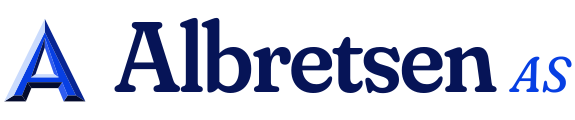
identity/wordmark.svgwordmark-on-lapis.svg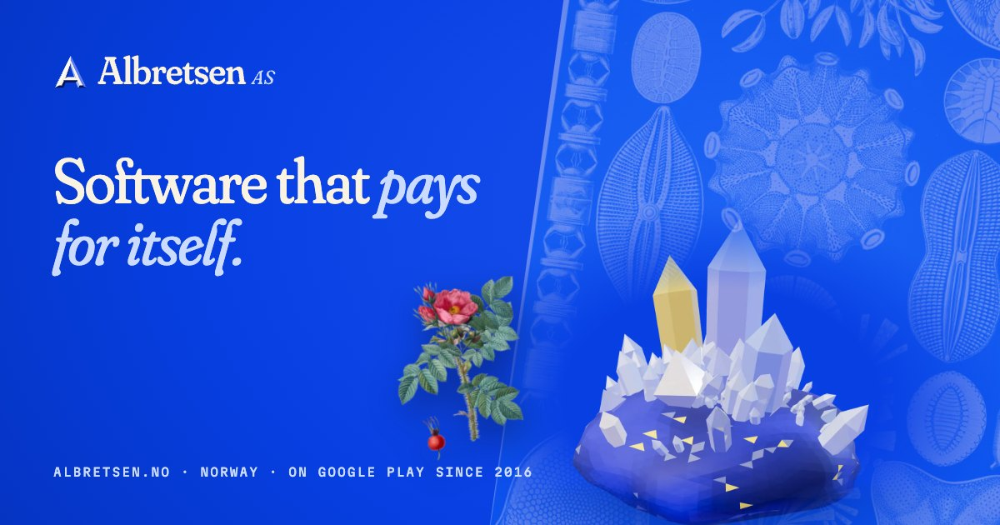
identity/og-image.jpgPlates, re-inked.
Public-domain engravings remapped into the lapis-to-vellum ramp, so the 1870s line work reads as if printed for this site. The geode stills are frames of the live scene, for no-WebGL, reduced motion and social.
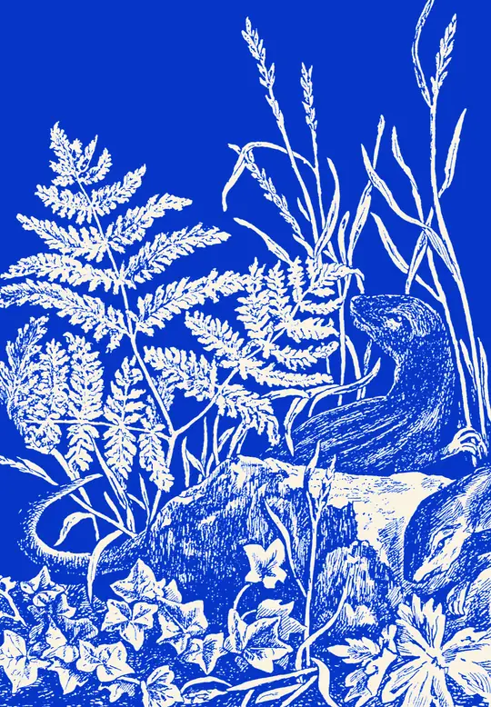
hero/hero-fern(@2x).webphero/hero-diatoms(@2x).webphero/geode-render-front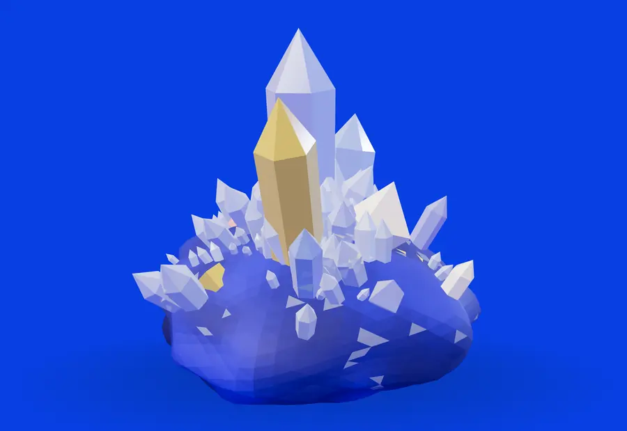
hero/geode-render-citrineEach product, mounted.
The real logos, untouched, taped to a museum mount and surrounded by the specimen that suits them. Drag the cards: the others make room on springs, and the order is remembered in this browser.
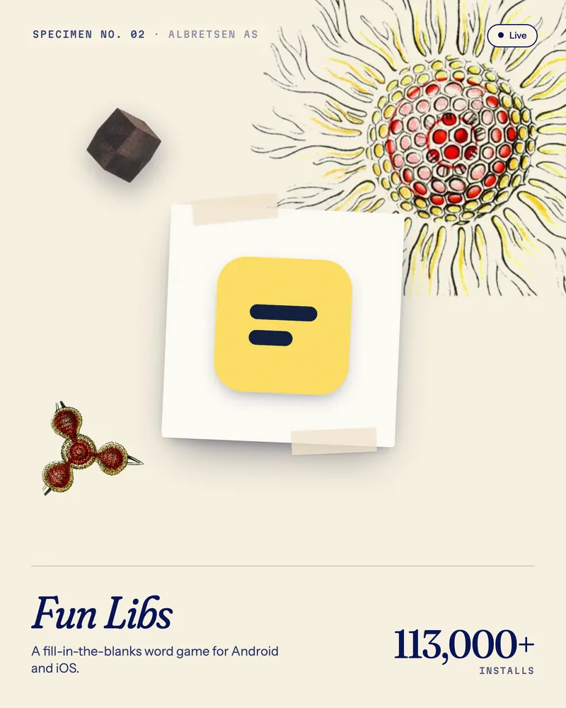
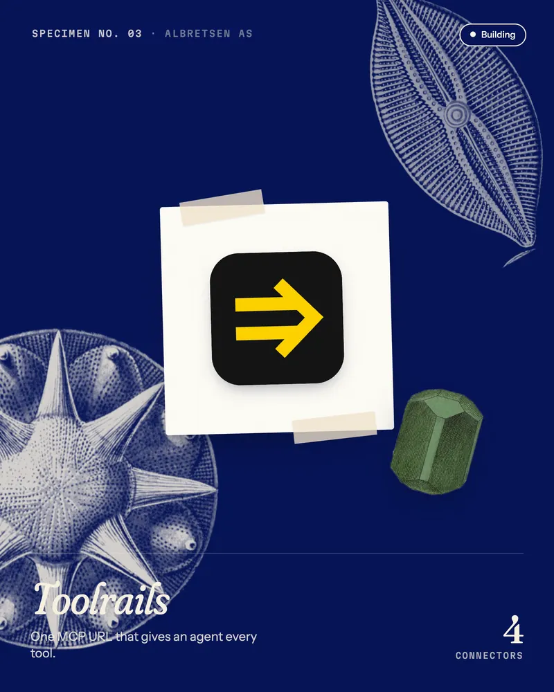
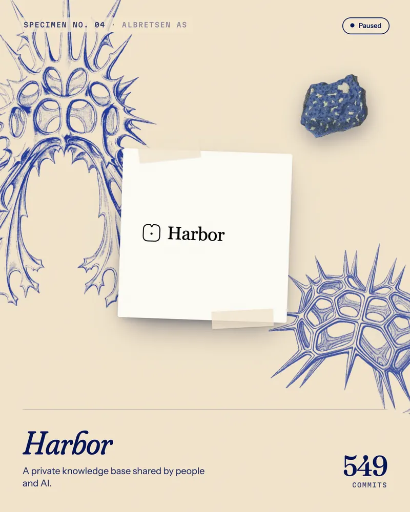
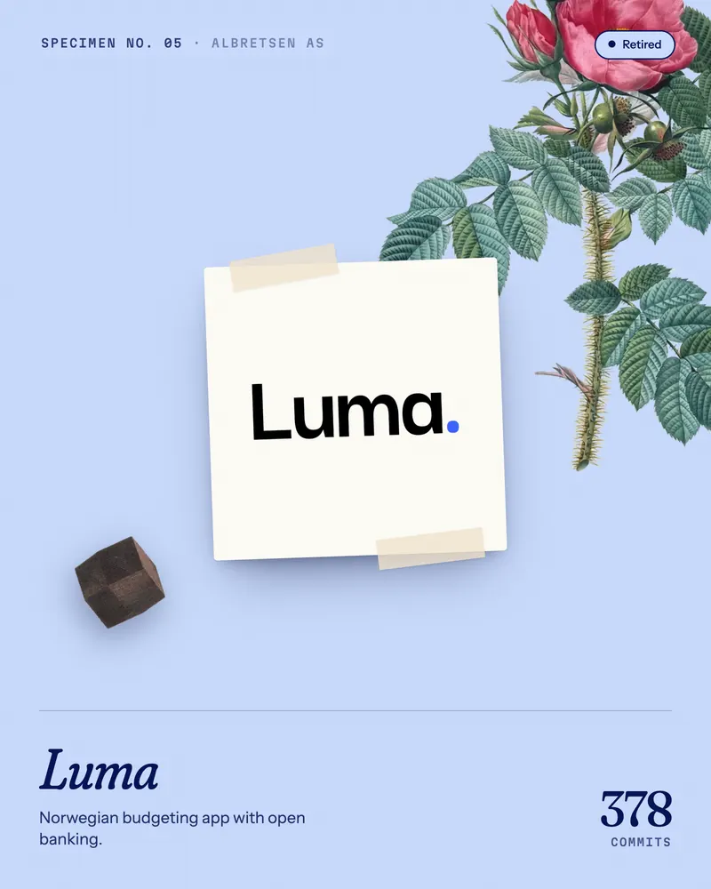
Retired, no surviving brand: crystal habits drawn like Tab. II (visible edges solid, hidden edges dashed). products/retired/*.svg
Things to scatter.
Cut-out specimens with real alpha: diatoms in vellum for lapis grounds, radiolarian skeletons in deep ink for paper grounds, Haeckel's coloured discs, Redouté's rose and four gems from an 1840s mineral plate. Every one is draggable here, on a spring.
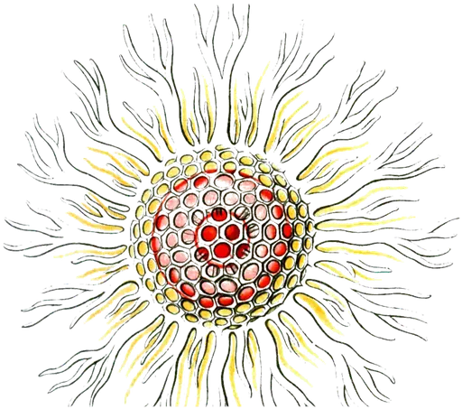
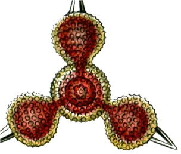
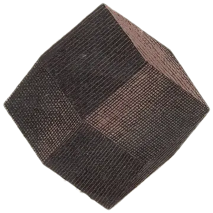
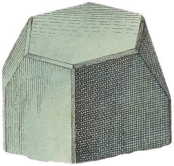
On lapis · drag me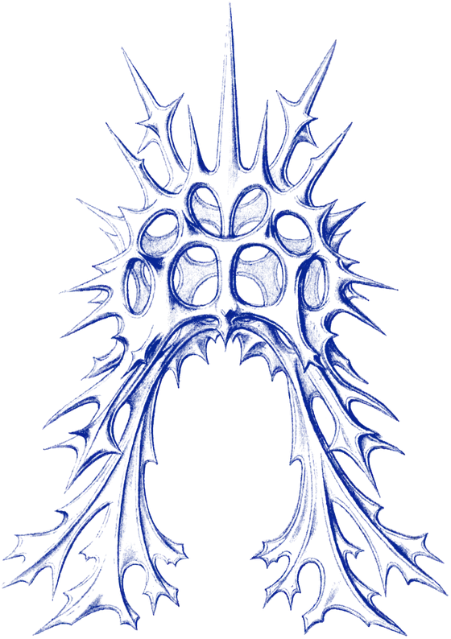
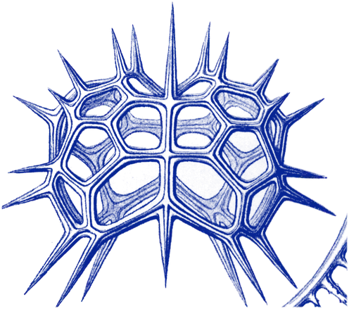
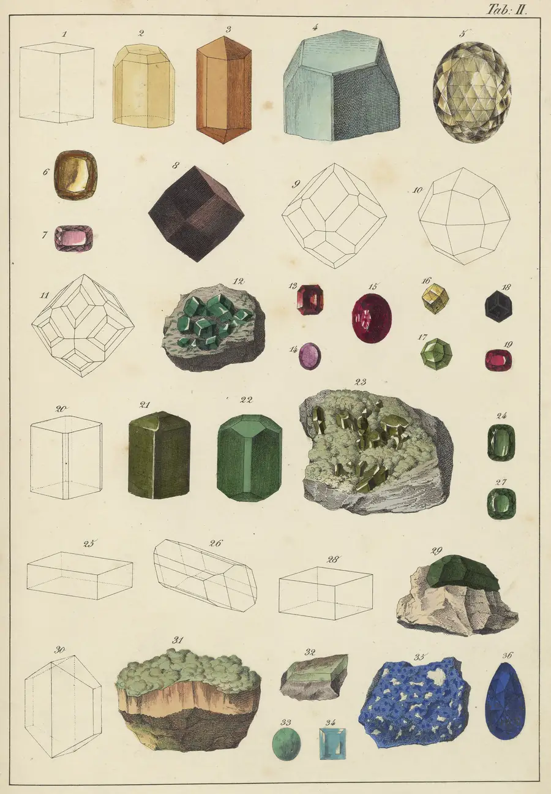
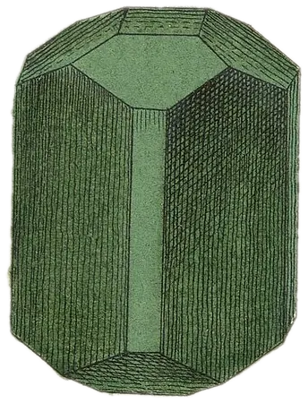
On parchment · Tab. II, 1840s, where ultramarine comes from: lapis lazuliextras/pattern-habits-ink.svgextras/pattern-habits-vellum.svgEverything on springs.
One hand-rolled damped spring, no library, fixed 240 Hz sub-steps, interruptible mid-flight. CSS gets the same curves as linear() tokens. Reduced motion jumps straight to the end state.
Specimen settle
Items are set down from 26px above with a slight tilt and land with one soft bounce, 70ms apart. k 210, c 17.
Loupe
The card leans toward the pointer and a lens follows the cursor at 2× magnification, like a hand lens over a slide. k 380, c 26.
Lapis wash
The next view arrives as ultramarine ink spreading from the click, then recedes from the far corner. k 120, c 15.
Also in the kit: herbarium() (the drag-to-rearrange grid above, FLIP plus springs) and drift() (stickers in the cover follow the pointer on a heavy spring). The geode's pick-up, re-seat and orbit use the same Spring class.